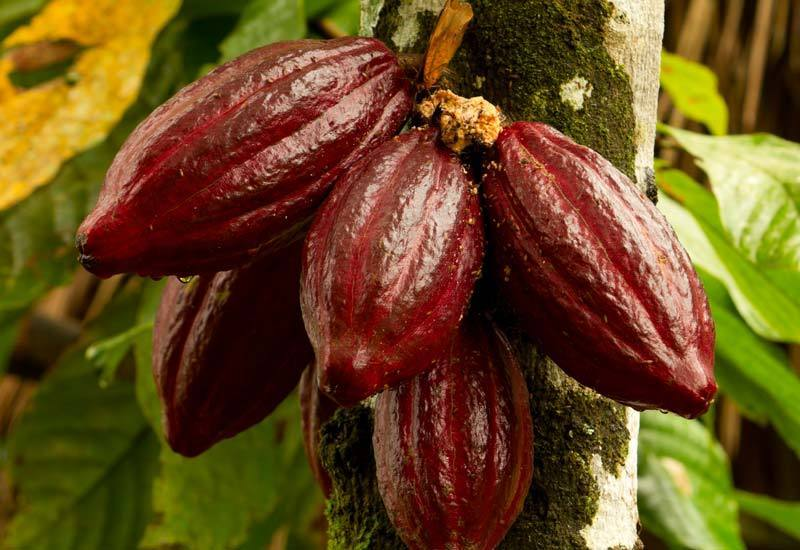
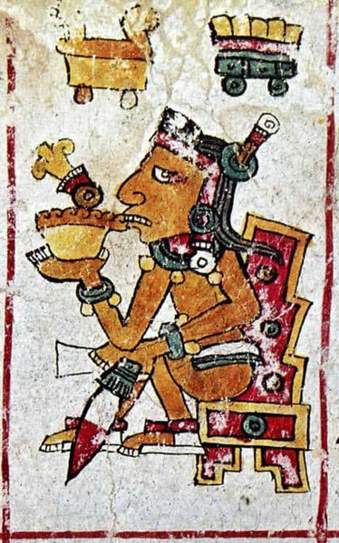
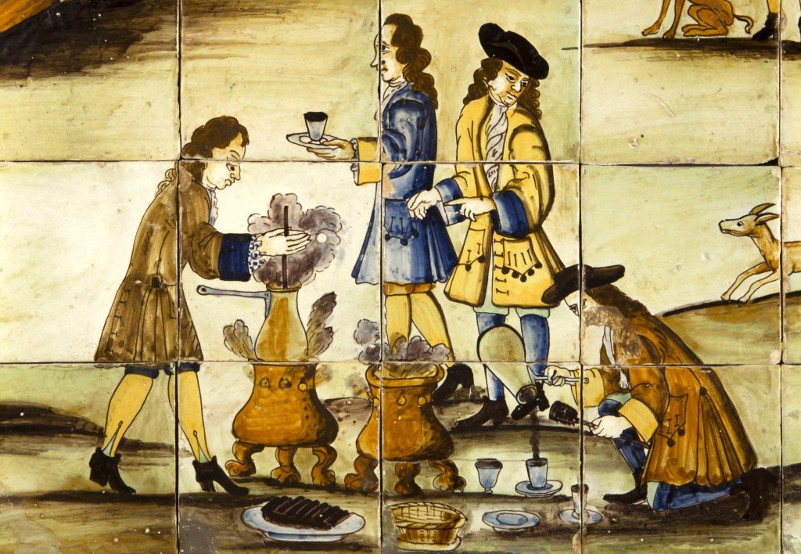
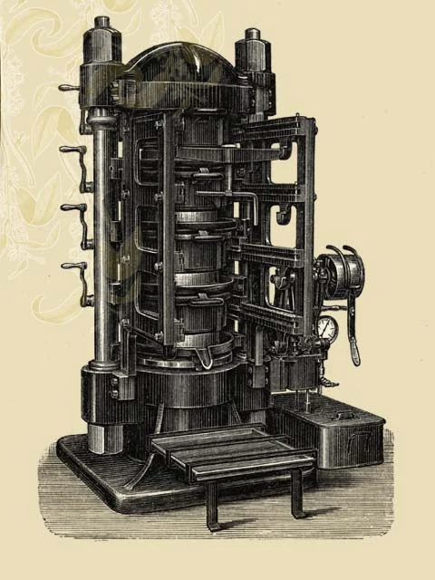

The story of chocolate begins in the tropical rainforests of Central America, where the cacao tree, Theobroma cacao, literally "food of the gods", has grown wild for millions of years. Archaeological findings indicate that cacao was first used around 1900 BCE by the Mokaya people of present-day Mexico. The Olmec civilization (1500, 400 BCE) took this a step further, cultivating the cacao tree and developing rudimentary methods for fermenting, roasting, and grinding its beans. Their innovations laid the foundation for a cacao culture that would be inherited and refined by later Mesoamerican societies.
The Historical Journey of Chocolate

Theobroma cacao tree with ripe cacao pods

Ancient Mayan chocolate ceremony depicted in historical artwork
During the Classic period (250, 900 CE), the Maya elevated cacao to new spiritual and economic heights. They developed intricate cultivation systems and created the first known chocolate beverage, xocolatl, a bitter, frothy drink made from ground cacao beans mixed with water, vanilla, and chili. This was no casual refreshment: cacao was reserved for rituals, offerings to gods, royal feasts, and elite trade. Its economic value was so high that beans functioned as currency, circulating throughout Mesoamerica as both sacred and transactional objects.
The Aztecs (1300, 1521 CE) inherited these cacao traditions and adapted them to their vast empire. Chocolate was considered a divine elixir, with Emperor Montezuma II famously consuming dozens of cups daily, believing it to enhance stamina, virility, and wisdom. Due to the high elevation of their capital Tenochtitlan, the Aztecs could not grow cacao locally; instead, they relied on tribute and trade from lower-elevation regions, which made cacao even more valuable. By the time Europeans arrived, cacao was already deeply embedded in a rich matrix of ritual, economy, and cosmology.
The European redefinition of cacao began in 1521 with the Spanish conquest of the Aztec Empire. Though early conquistadors found the drink unpleasant, they soon discovered that adding sugar, cinnamon, and milk transformed it into something far more palatable to European tastes. The Spanish quickly recognized cacao's potential as both a commodity and a cultural curiosity. By 1544, Dominican friars were presenting chocolate to the Spanish court, and soon after, cacao plantations were being established in colonial territories using enslaved labor.
The Spanish maintained a near-monopoly on cacao throughout the 16th century, keeping it a courtly secret while developing supply lines through colonial extraction. Cacao production shifted from indigenous stewards to European-controlled plantations, particularly in regions like Venezuela, the Caribbean, and Brazil. Here, enslaved Africans were forced to labor under brutal conditions, producing a substance that had once been sacred for consumption by European aristocracy. This marked cacao's violent transformation from a ceremonial food to a globally traded commodity woven into imperial economics.

17th century European chocolate house
This changed with the advent of industrialization. In 1828, Dutch chemist Coenraad van Houten invented the cocoa press, which could separate cocoa butter from roasted beans, allowing the mass production of cocoa powder. In 1847, British company J.S. Fry & Sons introduced the first moldable solid chocolate, and by 1876, Swiss inventor Daniel Peter, in partnership with Henri Nestlé, added milk to the recipe, creating the milk chocolate bar. These innovations drastically lowered the cost of production and expanded access to the working and middle classes. Chocolate had shifted from courtly indulgence to democratic delight, and its symbolic power evolved accordingly, from signifying elite refinement to mass pleasure.

Early industrial chocolate production machinery
Box of Chocolates for Valentine's Day
As chocolate became widely accessible, its meaning morphed again. No longer bound to religious ritual or courtly decorum, chocolate took on new roles in emerging consumer cultures. It was marketed as a comfort food, a reward, a stimulant, and increasingly, as an expression of love and intimacy. Valentine's Day, in particular, became a focal point for these narratives. By the late 19th and early 20th centuries, companies like Cadbury in England and Hershey in the United States were packaging chocolate in heart-shaped boxes, embedding it in the rituals of courtship and affection.
The transformation of chocolate into a symbol of love was not accidental; it was shaped by a mixture of industrial capitalism, advertising, and the social redefinition of taste. What was once a sacred drink of Mesoamerican gods had become a universal language of emotion, simultaneously commodified and culturally elevated. This final metamorphosis reveals chocolate's extraordinary versatility as a vessel of meaning, capable of absorbing and reflecting the values of vastly different worlds.